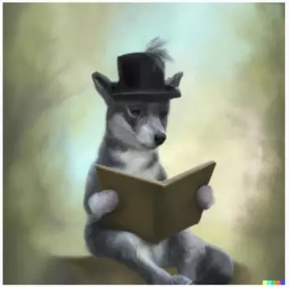

A little bit about me and why I got to making audiobooks:
I was born in Brazil, although I don't live there anymore. I'm in my
early 30s. My favorite book genres are fantasy and science fiction.

Yes, I'm a total Nerd. 🤓
Even the theme of my presentation with 🐺🔥🌳🌌 comes from my favorite
Tabletop RPG.
At first, I just listened to content like the one I do from many
different sources, even paid ones.
Because of my ADHD, I have much difficulty focusing on tasks, and I work
(currently) in a job that makes me drive a vehicle around the city with
potentially flammable cargo...
Well, in the first months, it was no problem, new city, new job.
Everything around me was new and exciting, and I could manage my focus
during work, but that did not last long for people like me.
Riding from 8 PM until 5 AM five nights a week made the endorphin trail
end quickly, and I found myself spacing out during work, and I could
not have that happening to me, or sooner or later, it could cause an
accident.
That's when I got to audiobooks. They kept my attention, and since each
book is a totally new experience, it is impossible to find the end of
the endorphins trail that sustains the focus of people like me.
Now, I could keep my eyes on the street at the people walking, one ear
on the cars and the other on a book, and maximize the use of my time
and take down that ever-growing list of things I want to read but always
postpone because I have a cell phone, video game, and computer back home.
However I can't sustain monetarily listening to almost 8 hours of audiobooks
five times each week. That's why I went to Spotify and searched for
free books to listen to. And I heard A LOT of them until I had listened
to all the books available from my favorite sources.
But now, about my channel. I got inspired by those people (my channel
name is an homage to one of them) who take their time and their money
to read those books free for us. Some have small channels like mine,
and some have vast projects with many people making it happen.
And all for free, to help spread the reading habit and to help people
who can not read for any reason. Be it for a physical or educational
deficiency, because of a condition like mine with ADHD, or people with
dyslexia... or even people that just never got to the habit of reading
or do not have the time for it anymore with the responsibilities of life.
So many people were doing it and helping me, then I decided to go and do
the same and join this group of people who are making the amazing world
(s) of books more accessible for everyone.